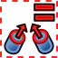
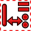
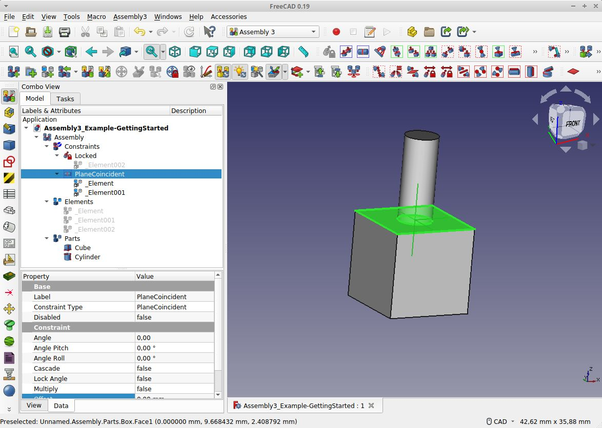

Assembly3 Workbench/fr
{kind=link}
Introduction
Assembly3 est un Atelier externe utilisé pour effectuer l'assemblage de différents corps contenus dans un seul fichier ou dans plusieurs documents. L'atelier est basé sur plusieurs changements de fonctions de base effectués pour la version de FreeCAD 0.19 (par exemple App Link), de sorte que Assembly3 Workbench ne peut pas être utilisé avec les versions antérieures.
Les principales fonctions de l'Atelier Assembly3 sont les suivantes :
- Un solveur dynamique/interactif. Cela signifie que vous pouvez déplacer des pièces avec la souris pendant que le solveur contraint le mouvement. Cela permet par exemple de connecter une roue à un axe et de tourner la roue de manière interactive avec la souris.
- Des liens. Cela signifie que vous pouvez utiliser une seule pièce, par exemple une vis, plusieurs fois dans un assemblage (à différents endroits) sans dupliquer la géométrie.
- Des liens externes. Il est possible d'avoir un document freecad qui ne contient qu'un assemblage et aucune pièce. Toutes les pièces peuvent être dans des fichiers séparés. Les fichiers peuvent même se trouver dans une bibliothèque ou n'importe où ailleurs dans le système de fichiers. La seule exigence est que le fichier doit être chargé lorsque le lien est établi. Une fois le lien établi, le fichier doit être ouvert pour pouvoir mettre à jour les liens impliquant le fichier. Assembly3 résout ce problème en ouvrant les fichiers en arrière-plan selon les besoins.
- Des assemblages hiérarchiques. Comme dans la vie réelle, un assemblage mécanique peut être composé de sous-assemblages. Ceux-ci peuvent être constitués de sous-ensembles, et ainsi de suite.
- Un blocage des assemblages. Comme le CPU ne peut gérer qu'un nombre limité de contraintes simultanées en temps réel, geler un assemblage permet d'utiliser des contraintes même pour de grands assemblages. En gelant les assemblages finis ou les contraintes qui ne doivent pas rester dynamiques (par exemple, les pièces soudées, boulonnées ou collées), ceux-ci sont exclus des calculs de mise à jour et considérés comme une géométrie fixe par le solveur Assembly3.
- Notez que d'autres approches offrent des solutions différentes à ce problème, par exemple l' Atelier Assembly4.
{kind=link}
Barres d'outils
À partir de 2020, l'atelier Assembly3 comprend les barres d'outils suivantes.
Barre d'outils principale
{kind=link}
{kind=link}
{kind=link}
{kind=link}
{kind=link}
{kind=link}
{kind=link}
{kind=link}
{kind=link}
{kind=link}
{kind=link}
{kind=link}
{kind=link}
{kind=link}
{kind=link}
{kind=link}
{kind=link}
{kind=link}
{kind=link}
La Barre d'outils principale contient des outils qui couvrent les fonctions les plus souvent utilisées de l'établi. Les infobulles donnent des raccourcis clavier.
 Créer un assemblage : Ajouter un dossier d'assemblage.
Créer un assemblage : Ajouter un dossier d'assemblage.- Grouper des objets : Grouper des objets.
- Créer un élément : Créer un élément.
- Importer depuis STEP. Deux paramètres :
- Importer fichier STEP : Importer des fichiers STEP
- Importer plusieurs documents : Importer des assemblages de STEP dans des documents séparés
- Résoudre les contraintes : Résoudre les contraintes.
- Résolution rapide : Résolution rapide des contraintes.
- Déplacer une pièce : Déplacer les pièces en 3D, ceci est spécifique à Assembly3.
- Déplacement axial : Déplacement axial des pièces en 3D, c'est l'outil classique disponible ailleurs dans FreeCAD.
- Déplacement rapide : Ceci attachera la pièce sélectionnée dans l'arborescence au curseur de la souris. Cela changera la position de la pièce lorsque vous cliquerez.
- Souvent, les pièces ajoutées sont empilées les unes sur les autres à l'origine. Utilisez cette fonction pour saisir une partie que vous ne pouvez pas voir.
- Verrouiller le déplacement : Dispositif de verrouillage pour une pièce fixe. Bouton à bascule. Lorsque cette option n'est pas sélectionnée, vous pouvez déplacer les pièces qui ont une contrainte "Verrouillage".
- Basculer la visibilité de la pièce : Ceci active/désactive la visibilité de la pièce sélectionnée.
- Notez que cela diffère de l'utilisation de l'espace. L'utilisation de l'espace avec des éléments sélectionnés d'un sous-assemblage dans la vue 3D ne se comporte souvent pas comme prévu. Utilisez cette fonction dans ces cas (ou le raccourci A-Space)
- Tracé du déplacement d'une pièce : Tracé du déplacement d'une pièce (A définir)
- Recomputation automatique : Recalcul automatique. Habituellement activé.
- Peut être désélectionné lors de la réparation de contraintes ou de la fixation de pièces où le solveur donne un message "do not converge" (par exemple en tournant la pièce à 180 degrés)
- Recomputation intelligente : Recalcul intelligent. Habituellement activé.
- Auto réparation d'un élement : Auto réparation d'un élement. Fonctionnalité expérimentale dans 0.19_pre.
- Style d'élément. Cela a deux paramètres
- Visibilité d'élément automatique : Visibilité d'élément automatique.
- Système de coordonnées de l'élément : Afficher le système de coordonnées de l'élément.
- Plan de travail et origine. Ajoute un plan de travail, un placement ou une origine. Une pièce doit être sélectionnée. Cinq paramètres
- Ajouter un plan de travail : Ajouter un plan de travail.
- Ajouter un plan de travail XZ : Ajouter un plan de travail XZ.
- Ajouter un plan de travail ZY : Ajouter un plan de travail YZ.
- Ajoutez un emplacement : Ajouter un emplacement.
- Ajouter une origine: Ajouter l'origine.
- Déplacer un objet vers le haut : Déplacer l'élément d'arborescence sélectionné vers le haut.
- Déplacer un objet vers le bas : Déplacer l'élément sélectionné de l'arborescence vers le bas.
- Permet de trier les pièces, éléments ou contraintes dans l'arborescence. Élément retourné (de haut en bas et vice versa). Ne fonctionne que pour une seule sélection.
- Multiplier les contraintes : Contrainte de multiplication. Cela peut être sélectionné si plusieurs pièces et éléments appropriés sont présents.
- Il est utilisé par ex. pour affecter plusieurs fixations du même type dans plusieurs trous avec une seule contrainte.
{kind=link}
{kind=link}
{kind=link}
{kind=link}
{kind=link}
{kind=link}
Barre d'outils des contraintes principales
{kind=link}
{kind=link}
{kind=link}
{kind=link}
{kind=link}
{kind=link}
{kind=link}
{kind=link}
{kind=link}
{kind=link}
{kind=link}
{kind=link}
{kind=link}
{kind=link}
{kind=link}
{kind=link}
{kind=link}
{kind=link}
Certains outils sont en fait un menu pour d'autres outils.
- Contrainte de verrouillage : Ajoute une contrainte "Vérouillée" pour corriger une ou plusieurs pièces.
- Vous devez sélectionner un élément de géométrie de la pièce.
- Si vous fixez un sommet ou une arête, la pièce est toujours libre de tourner autour du sommet ou de l'arête.
- La fixation d'une face verrouille complètement la pièce.
- Contrainte d'alignement : Ajoute une contrainte "Alignement plan" pour aligner les faces planes de deux pièces ou plus.
- Les faces deviennent coplanaires ou parallèles avec une distance optionnelle.
- Contrainte de coïncidence : Ajoute une contrainte "Coïncidence de plan" pour faire coïncider les faces planes de deux pièces ou plus.
- Les faces coïncident en leurs centres avec une distance facultative.
- Accrochage. Il y a deux paramètres
- Contrainte d'accrochage : Ajoute une contrainte "Attachment" pour attacher deux pièces avec les éléments géométriques sélectionnés.
- Cette contrainte fixe complètement les pièces l'une par rapport à l'autre.
- Contrainte décalage d'accrochage : Identique à la contrainte "Accrochage", mais maintient le placement relatif des pièces en question en appliquant un décalage d'élément.
- Cette contrainte fixe complètement les pièces les unes par rapport aux autres.
- Contrainte d'accrochage : Ajoute une contrainte "Attachment" pour attacher deux pièces avec les éléments géométriques sélectionnés.
- Contrainte axiale : Ajoute une contrainte "Alignement axial" pour aligner les arêtes/faces de deux pièces ou plus.
- La contrainte accepte
- arêtes linéaires, qui deviennent colinéaires,
- faces planes, alignées en utilisant leur axe normal de surface,
- et face cylindrique, alignés dans la direction axiale.
- Différents types d'éléments géométriques peuvent être mélangés.
- La contrainte accepte
- Contrainte orientation identique : Ajoute une contrainte "Même orientation" pour aligner les faces de deux pièces ou plus.
- Les plans sont alignés pour avoir la même orientation (c.-à-d. Rotation)
- Contrainte parallèle : Ajoute une contrainte "Multi parallèle" pour rendre parallèles les faces planes ou les arêtes linéaires de deux pièces ou plus.
- Contrainte d'angle : Ajoute une contrainte "Angle" pour définir l'angle des faces planes ou des arêtes linéaires de deux pièces.
- Contrainte perpendiculaire : Ajoute une contrainte "Perpendiculaire" pour rendre perpendiculaires les faces planes ou les arêtes linéaires de deux pièces.
- Contrainte de points coïncidents : Ajoute une contrainte "Point coincident" pour faire coïncider deux points en 2D ou 3D.
- Contrainte point sur un plan : Ajoute un "Point sur plan" pour contraindre un ou plusieurs points sur un plan.
- Contrainte point sur une ligne : Ajoute un "Point sur ligne" pour contraindre un point sur une ligne en 2D ou 3D.
- Contrainte point sur un cercle : Ajoute un "Point sur cercle" pour contraindre un ou plusieurs points sur une surface clyndrique définie par un cricle.
- Notez que vous devez sélectionner un point (tout élément de géométrie peut définir un point), puis sélectionner le cercle (ou la surface clyndrique),
- après quoi vous pouvez ajouter plus de points à votre sélection si vous le souhaitez.
- Contrainte distance entre points : Ajoute une "Distance de points" pour contraindre la distance de deux points ou plus.
- Contrainte distance entre point et plan : Ajoute une "Distance plan à point" pour contraindre la distance entre un ou plusieurs points et un plan.
- Contrainte distance entre point et ligne : Ajoute une "Distance de ligne de point" pour contraindre la distance entre un point et une arête linéaire en 2D ou 3D.
- Contrainte de symétrie : Ajoute une contrainte "Symétrique" pour rendre les éléments géométriques de deux pièces symétriques par rapport à un plan.
- Les éléments pris en charge sont l'arête linéaire et la face plane.
- Plus de contraintes : Basculer les barres d'outils pour plus de contraintes
- Pas vraiment une contrainte mais une bascule pour afficher/masquer la barre d'outils des contraintes supplémentaires.
- Contrainte de verrouillage : Ajoute une contrainte "Vérouillée" pour corriger une ou plusieurs pièces.
{kind=link}
Barres d'outils des contraintes supplémentaires
-

(Assembly3 Constraints2)
{kind=link}
{kind=link}
{kind=link}
{kind=link}
{kind=link}
{kind=link}
{kind=link}
{kind=link}
{kind=link}
{kind=link}
-

(Assembly3 Sketch Constraints)
{kind=link}
{kind=link}
{kind=link}
{kind=link}
{kind=link}
{kind=link}
{kind=link}
{kind=link}
{kind=link}
{kind=link}
{kind=link}
{kind=link}
{kind=link}
Vous pouvez les activer en sélectionnant le bouton More de la barre d'outils des Contraintes principales.
- Contrainte distance d'un point : Ajoute une "distance de point" pour contraindre la distance de deux points en 2D ou 3D.
- Contrainte égalité angle : Ajoute un "Angle égal" pour égaliser les angles entre deux lignes ou normales.
- Contrainte points symétriques : Ajoute une contrainte "Points symétriques" pour rendre deux points symétriques par rapport à un plan.
- Contrainte symétrie horizontale : Symmétrie horizontale.
- Contrainte symétrie verticale : Symmétrie verticale.
- Contrainte symétrie par une ligne : Ajoute une contrainte "Ligne symétrique" pour rendre deux points symétriques par rapport à une ligne.
- Contrainte alignement horizontal : Ajoute une contrainte "Points horizontaux" pour rendre deux points horizontaux l'un par rapport à l'autre lorsqu'ils sont projetés sur un plan.
- Contrainte alignement vertical : Ajoute une contrainte "Points verticaux" pour rendre deux points verticaux l'un avec l'autre lorsqu'ils sont projetés sur un plan.
- Contrainte ligne horizontale : Ajoute une contrainte "Ligne horizontale" pour rendre un segment de ligne horizontal lorsqu'il est projeté sur un plan.
- Contrainte ligne verticale : Ajoute une contrainte "Line vertical" pour rendre un segment de ligne vertical lorsqu'il est projeté sur un plan.
- Contrainte tangence arc ligne : Ajoute une contrainte "Arc ligne tangence" pour rendre une ligne tangente à un arc au point de début ou de fin du arc.
- Contrainte esquisse plan : Ajoute un "plan d'esquisse" pour définir le plan de travail de tout élément de dépouille à l'intérieur ou suivant cette contrainte.
- Ajoute un "plan d'esquisse" vide pour annuler la définition du plan de travail précédent.
- Contrainte longueur ligne : Ajoute une contrainte "Line length" pour limiter la longueur d'un Draft.Wire non subdivisé.
- Contrainte égalité longueur : Ajoute une contrainte "Longueur égale" pour créer deux lignes de même longueur.
- Contrainte longueur par ratio : Ajoute un "Rapport de longueur" pour contraindre le rapport de longueur de deux lignes.
- Contrainte longueur différence : Ajoute une "Différence de longueur" pour contraindre la différence de longueur de deux lignes.
- Contrainte longueur égale distance point ligne: Ajoute une "Length Equal Point Line Distance" pour contraindre la distance.
- entre un point et une ligne pour être la même que la longueur d'une autre ligne.
- () Contrainte égalité longueur arc et ligne : Ajoute une "Longueur d'arc de ligne égale "contrainte de faire une ligne de même longueur qu'un arc.
- Contrainte milieu : Ajoute un "Milieu" pour contraindre un point au milieu d'une ligne.
- Contrainte diamètre : Ajoute un "Diamètre" pour contraindre le diamètre d'un cercle/arc.
- Contrainte rayon : Ajoute une contrainte "Egalité de rayon" pour créer deux cercles/arcs de même rayon.
- Contrainte distance du point projeté : Ajoute une "distance du projet de points" pour contraindre la distance de deux points projetés sur une ligne.
- Contrainte égalité distance point et ligne : Ajoute une "Equal point line distance" pour contraindre la distance.
- entre un point et une ligne pour être identique à la distance entre un autre point et une ligne.
- Contrainte colinéaire : Ajoute une contrainte "Colinéaire" pour rendre deux lignes colinéaires.
- Contrainte esquisse plan : Ajoute un "plan d'esquisse" pour définir le plan de travail de tout élément de dépouille à l'intérieur ou suivant cette contrainte.
- Les Barre d'outils Contraintes seront l'interface principale utilisée lors de l'assemblage des pièces.
- Elles sont grisées par défaut mais sont activées dès qu'au moins une face, une ligne ou un point d'une pièce est sélectionné.
- En général, vous sélectionnez les éléments qui doivent être assemblés, puis vous sélectionnez le type de contrainte.
- Les différents cadres colorés marquent différentes caractéristiques des contraintes :
- si des 2D/3D ou si plus de 2 éléments peuvent être ajoutés.
- Une description détaillée peut être trouvée dans le wiki GitHub.
{kind=link}
- Ces fonctions sont utiles lorsque vous travaillez avec un assemblage comportant une hiérarchie de fichiers externes liés.
- Relations : révèle le groupe Relations (caché par défaut) et sélectionne un objet relation.
 Lien objet lié : sélectionne l'objet lié et passe à son document. introduit dans la version 0.19
Lien objet lié : sélectionne l'objet lié et passe à son document. introduit dans la version 0.19 Objet lié le plus profond : sélectionne l'objet lié le plus profond et passe à son document. introduit dans la version 0.19
Objet lié le plus profond : sélectionne l'objet lié le plus profond et passe à son document. introduit dans la version 0.19
Barre d'outils de mesure
{kind=link}
{kind=link}
{kind=link}
{kind=link}
- La Barre d'outils de mesure ajoute des fonctions permettant de mesurer la distance ou l'angle entre deux objets.
- Mesure point à point : Ajoute un "Point de mesure" pour mesurer la distance de deux points en 2D ou 3D.
- Mesure point à la ligne : Ajoute un "Mesurer point à ligne" pour mesurer la distance entre un point et une arête linéaire en 2D ou 3D .
- Mesure point au plan : Ajoute un "Mesurer point à plan" pour mesurer la distance entre un point et un plan.
- Mesure d'angle : Ajoute un "Mesurer l'angle" pour mesurer l'angle des faces planes ou des arêtes linéaires de deux pièces.
- Il n'y a pas de fonction pour mesurer un rayon ou un diamètre.
- Les outils de mesure survivent aux changements de pièces, par ex. la distance entre les bords d'un cube lorsque le cube est redimensionné. Comme les contraintes les calculs sont effectués en temps réel et mis à jour à tout changement. En coulisse, la fonction est très similaire aux contraintes. La distance ou l'angle est calculé entre Elements de la même manière que pour contraintes. L'affichage dans l'arborescence fonctionne de la même manière.
- Il n'y a pas de fonction pour mesurer un rayon ou un diamètre.
- Les outils de mesure survivent aux changements de pièces, par exemple la distance entre les bords d'un cube lorsque le cube est redimensionné.
- Comme les contraintes les calculs sont faits en temps réel et mis à jour à chaque changement. En coulisses, la fonction est très similaire à celle des Contraintes. La distance ou l'angle est calculé entre les Elements de la même manière que pour les Contraintes. L'affichage dans l'arbre fonctionne de la même manière.
Comme d'habitude, vous pouvez modifier les barres d'outils et ajouter ou supprimer des outils individuellement. Veillez à vérifier dans le menu Assembly3 les fonctions qui ne sont pas présentes dans les barres d'outils.
Contraintes
Le concepteur utilise des contraintes pour obtenir le résultat souhaité pour la relation de deux parties. Tout l'art consiste à sélectionner les contraintes les mieux adaptées à chaque problème. Chaque DOF (Degree of Freedom) éliminé ne devrait en théorie être éliminé qu'une seule fois entre deux objets, mais en pratique, avec de nombreux outils de CAO, les contraintes sélectionnées provoquent des combinaisons surcontraintes, souvent compensées par des algorithmes complexes, parfois non. Assembly3 utilise des algorithmes pour détecter et compenser les surcontraintes, mais il est clair qu'ils ne sont pas encore très au point. En pratique, pour Assembly3, les contraintes évitent les problèmes en sachant combien de degrés de liberté (DOF) ont été utilisés et lesquels doivent encore être verrouillés par des contraintes. Aucune pièce ne devrait avoir une connexion par des contraintes utilisant plus de 6 DOF.
- Remarque : Si le solveur rencontre une combinaison qui ne peut pas être résolue, il donnera une erreur. Il est très difficile pour le solveur de découvrir ce qui a causé le problème donc généralement à partir de cette erreur, il ne sera pas clair sur le « d'où » vient le problème. Dans les assemblages plus volumineux, cela peut conduire à des recherches de problèmes complexes. Malheureusement, il n'y a pas de moyen simple d'éviter cela. Cependant, il est utile d'être pleinement conscient du fonctionnement du système (par exemple, voir Elements ci-dessous), d'utiliser des noms clairs pour tous les composants impliqués et d'ajouter des contraintes supplémentaires uniquement lorsque le solveur résout l'assemblage en cours. La fonction « ContexMenu/Deactivate » de chaque contrainte est très utile pour repérer un problème.
Les contraintes Assembly3 définissent les restrictions de position ou d'orientation entre deux Elements. Certaines contraintes fonctionnent même avec plus de deux Elements. Un Element peut être une face, une ligne ou une arête ou un point d'une pièce. En général, les contraintes sont définies en sélectionnant les Elements souhaités puis en sélectionnant la contrainte depuis la barre d'outils des Contraintes.
- Bloque 6 DOF, laisse 0 DOF :
- Lock : la contrainte de verrouillage bloque tous les DOF pour une face. Elle doit être utilisée pour une pièce de base dans chaque assemblage. Vous pouvez également activer la fonction "MoveLock" (dans la barre d'outils) afin que la pièce ne puisse pas être déplacée accidentellement. Normalement, peu importe la face/ligne/point que vous utilisez pour fixer une pièce. Notez également que le verrou n'est valide que pour l'assemblage direct, c'est-à-dire que dans le cas d'un sous-assemblage, l'assemblage parent nécessiterait toujours une pièce verrouillée seule.
- Attachment : rend les systèmes de coordonnées des deux éléments égaux pour tous les axes. C'est la fonction la moins coûteuse en termes de calcul et elle doit être utilisée dans la mesure du possible. Notez que vous pouvez utiliser les propriétés des éléments pour compenser les décalages et les angles si les deux Elements ne sont pas parfaitement alignés.
- Bloque 5 DOF, laisse 1 DOF :
- Plane Coincident : bloque Tx, Ty, Tz, Rx, Ry. Seul Rz est libre. Il reste la rotation autour de la normale passant par le «centre du plan».
- Bloque 4 DOF, laisse 2 DOF :
- Axial Alignment : bloque Tx, Ty, Rx, Ry. Seuls Tz, Rz sont libres. Reste la rotation autour de l'axe de la forme et la translation le long de ce même axe. Deux contraintes «PointOnLine» (si les deux points sont différents) donnent le même résultat. La contrainte «Colinear» aussi.
- PointOnLine : Ceci élimine la translation et la rotation le long des normales à la ligne de référence. Seules la translation et la rotation le long de l'axe de la ligne sont autorisées.
- Bloque 3 DOF, laisse 3 DOF :
- Same Orientation : bloque Rx, Rz, Rz. Tous les T restent libres
- Points Coincident : bloque Tx, Ty, Tz. Tous les R restent libres
- PointOnPoint élimine les 3 translations.
- Plane Alignment : bloque Tz, Rx, Ry (mouvement plan). Cela élimine la translation le long de la normale au plan de référence et les deux rotations autour des axes de ce plan.
- Bloque 2 DOF, laisse 4 DOF :
- Multi Parallel : bloque Rx, Ry. Tous les T et Rz restent. Cela élimine les deux rotations autour des axes du plan de référence
- Bloque 1 DOF, laisse 5 DOF :
- Points in Plane : bloque Tz. Cela élimine la translation le long de la normale au plan de référence.
- Points Distance : fixe la distance entre les origines des éléments.
- Cela vous donne plus de liberté que Points in Plane
Autre
- Points on Circle : bloque Tz et partiellement Tx, Ty. Impose la translation de points (ou plusieurs points) sur un cercle ou une zone de disque. Vous devez choisir le cercle en second. Cela laisse toutes les rotations libres et donne une translation limitée dans le plan de référence du cercle.
: Remarque : dans la liste suivante, Tx, Ty, Tz et Rx, Ry, Rz sont utilisés pour décrire les translations et les rotations concernant les systèmes de coordonnées de référence des éléments impliqués. Ce n'est pas toujours exact ou entièrement défini, par ex., lorsqu'il s'agit d'une ligne, elle n'est pas définie si elle s'étend en X, Y ou tout angle entre les deux. Le système est utilisé pour la convivialité et la comparaison facile en faveur d'une définition correcte mais plus complexe. Donc Z est généralement la direction normale de toutes les faces impliquées. N'hésitez pas à modifier cela avec une meilleure approche avec une meilleure lisibilité.
Elements
Elements est un terme spécifique utilisé dans l'atelier Assembly 3 et il est important de comprendre les Elements pour comprendre comment Assembly 3 doit être utilisé.
Il est utile de penser à un Element comme un mot général pour un 'élément sélectionnable' d'une pièce, c'est-à-dire une face, une arête, un cercle ou un coin ou un autre point. Les éléments que vous sélectionnez pour les contraindre sont ces éléments. Dans l'arborescence, un dossier d'assemblage comporte trois sous-dossiers. À côté de 'Parts' et 'Constraints', il y a un dossier nommé 'Elements', qui est vide tant qu'aucune contrainte n'est ajoutée. Lors de l'ajout d'une contrainte, la contrainte elle-même obtient deux (ou plus) feuilles, ce sont les 'Elements' sélectionnés. Ces derniers sont également ajoutés dans le dossier 'Elements' qui n'est qu'une liste de tous les éléments utilisés dans l'assemblage. C'est le bon moment pour changer leurs noms (avec la touche F2), en particulier dans les grands assemblages.
Regardons un exemple
- Créez un nouveau fichier et ajoutez à partir de l'atelier Part un cube et un cylindre. Nous empilerons le cylindre sur le cube. Nous fixons d'abord la partie de base, en aucun cas le cube. Sélectionnez la face inférieure du cube et sélectionnez la contrainte "Locked" (première icône dans la barre d'outils des Contraintes). Sélectionnez la face supérieure du cylindre et la face supérieure du cube. Sélectionnez ensuite la contrainte "Plane Coincident". Maintenant, le cylindre est déplacé dans le cube et dans l'arbre une nouvelle feuille avec deux nœuds enfants a été ajoutée sous «Contraintes». De plus, les deux mêmes nœuds enfants ont été ajoutés sous "Elements". Si votre cylindre est à l'intérieur du cube au lieu d'être sur le cube, corrigeons d'abord cela : sélectionnez le nœud enfant sous "Constraints " qui montre la face du cylindre et avec un clic droit dans le menu contextuel, sélectionnez "Flip Part". Maintenant, le cylindre est empilé sur le cube.
Ce qu'il faut comprendre, c'est que la contrainte fonctionne sur les liens vers les éléments de la liste du dossier de l'arborescence "Elements". Cela permet de conserver la structure de la contrainte intacte tout en modifiant les éléments. C'est très difficile à comprendre sans un exemple.
Revenons à l'exemple ci-dessus
- Remarque : assurez-vous que vous avez ajouté la contrainte "Locked" au cube ou cela semblera déroutant
- Dans la fenêtre CAO, sélectionnez une autre face du cube. Nous allons maintenant travailler uniquement dans l'arborescence. Utilisez votre souris dans l'arborescence ; assurez-vous que le cube est sélectionné. Glissez et déposez le cube dans le dossier "Elements". Déposez-le sur le nom "Elements", pas ailleurs dans le dossier - nous verrons pourquoi plus tard. Vous devriez voir qu'un autre élément est ajouté à la liste "Elements". Sélectionnez maintenant dans le dossier "Constraints" le nœud enfant de la face du cube dans la contrainte "Plane Coincident" et supprimez-le. La contrainte affichera un point d'exclamation car il lui manque un élément. Notez qu'en supprimant l'élément dans la contrainte, nous ne l'avons "pas" supprimé dans la liste. En effet, dans la contrainte, il s'agissait uniquement d'un lien vers l'élément de la liste. Maintenant, prenez l'élément nouvellement ajouté dans la liste des éléments et glissez-déposez-le sur la contrainte "Plane Coincident". Maintenant, le cylindre se déplace vers l'autre face que nous avons sélectionnée. Il se peut que nous devions sélectionner à nouveau "menu contextuel/flip part" si le cylindre se trouve à nouveau à l'intérieur du cube.
L'exemple a montré que sans supprimer la contrainte, nous pouvons changer les Elements utilisés pour la contrainte. De la même manière, nous pouvons déplacer le cylindre vers une partie totalement différente. Après avoir joué un peu plus avec cet exemple, vous noterez quelques éléments supplémentaires tels que :
- si vous renommez un Element dans la liste, le nom sera changé dans toutes les contraintes.
- vous pouvez utiliser un Element de la liste dans plusieurs contraintes.
- Vous pouvez utiliser la fenêtre des propriétés d'un Element pour ajouter des décalages. Dans l'exemple, cela pourrait déplacer le cylindre sur la face du cube.
- vous pouvez utiliser le bouton "Show Element Coordinate System" (Afficher le système de coordonnées de l'élément) dans la barre d'outils principale pour voir ce que font 'ContextMenu/Flip Part' et 'ContextMenu/Flip Element'. Assurez-vous de regarder ce qui se passe dans la fenêtre des propriétés.
- vous pouvez ajouter une contrainte dans un ordre totalement différent: commencez par ajouter quelques éléments à la 'Elements List' (la dénomination est utile, par exemple "Face supérieure du cube" ou "Face avant du cube") puis ajoutez une contrainte sans rien sélectionner - ce sera une contrainte vide. Faites ensuite glisser Elements de la liste 'Elements'. Le résultat est le même que ce que nous avons fait dans le premier exemple. Après avoir fait cet exercice, la nature du fonctionnement des contraintes avec les éléments doit être claire.
- vous pouvez modifier une contrainte existante entre des éléments existants en sélectionnant simplement un élément différent dans la propriété PropertyWindow/ConstraintType.
Compatibilité
Assembly3 a été inspiré par Assembly2 mais il n'est pas compatible avec lui. Si vous avez des modèles plus anciens fabriqués dans Assembly2, vous devriez rester avec FreeCAD 0.16 et utiliser Assembly2.
Les nouveaux modèles développés avec Assembly3 ne doivent être ouverts et modifiés qu'avec cet atelier.
Bien qu'ils puissent avoir des outils similaires, Assembly3 n'est pas compatible avec A2plus ni Assembly4. Les modèles créés avec ces ateliers ne doivent être ouverts qu'avec leur atelier respectif.
Installation
L'atelier Assembly3 est disponible (à partir de mars 2022) via le Gestionnaire des extensions. Toutes les dépendances d'Assembly3 devraient être gérées automatiquement par le gestionnaire des extensions.
Installations alternatives
Il existe deux autres façons d'installer Assembly3 :
- Un fork spécial de FreeCAD fait par realthunder ; voir ici. Ce fork est basé sur un commit particulier de la branche master de FreeCAD, mais il a également des fonctionnalités supplémentaires qui ne sont actuellement pas présentes dans la branche master. Étant donné que ce fork est basé sur un instantané de développement particulier, il n'a pas les dernières fonctionnalités fusionnées quotidiennement à la branche principale.
- Le développement d'AppImage est basé sur la branche principale en cours et inclut les dépendances nécessaires pour travailler avec Assembly3, comme le solveur SolveSpace.
Comme l'AppImage ne fonctionne que pour Linux, pour les utilisateurs de Windows (qui veulent une installation alternative d'Assembly3) l'option pour tester Assembly3 est la première option (fork de realthunder).
Utilisation
Commencez
Il existe de nombreuses façons de créer un assemblage avec Assembly3. Voici la plus simple que vous puissiez faire.

- Résultat final de l'exemple de mise en route. Dans l'image, l'atelier Assembly3 est sélectionné, de sorte que ses multiples barres d'outils sont visibles. Notez que la "TabBar" verticale à gauche de l'arborescence est une extension qui n'est pas contenu dans FreeCAD standard (peut être installé avec le Gestionnaire des extensions).
{kind=link}
- Appuyez sur
 Nouveau document pour créer un nouveau fichier FreeCAD
Nouveau document pour créer un nouveau fichier FreeCAD - Changez pour l'atelier Assembly3.
- Sélectionnez Create assembly
- Changez pour l'atelier
 Part et ajoutez un
Part et ajoutez un  cylindre et un
cylindre et un  cube
cube  Sauvegardez le fichier avec le nom que vous voulez.
Sauvegardez le fichier avec le nom que vous voulez.  Fermez et
Fermez et  ouvrez le fichier de nouveau.
ouvrez le fichier de nouveau.
L'arborescence devrait ressembler à ceci (0.20.pre et Link Branch) :
{kind=link}
{kind=link}
- Maintenant, faites un glisser-déposer avec la souris des Cylindre et Cube dans le dossier Pièces. Ils sont déplacés dans ce dossier.
- C'est la méthode la plus rapide et la plus adaptée à des cas simples comme celui-ci. Une meilleure méthode consiste à utiliser des objets de liaison :
- Sélectionnez Cube et Cylindre et ensuite
 créez un lien soit dans le menu conxtetuel (-> LinkActions -> MakeLink). (-> LinkActions -> MakeLink) ou du panneau Structure.
créez un lien soit dans le menu conxtetuel (-> LinkActions -> MakeLink). (-> LinkActions -> MakeLink) ou du panneau Structure. - Ceci ajoute deux objets liens. Ensuite, faites un glisser-déposer des objets liens vers le dossier Pièces.
- Cliquez sur les deux surfaces supérieures de Cylindre et Cube (maintenez la touche Ctrl enfoncée (Cmd sur Mac)).
- Changez pour l'atelier Assembly3.
- Sélectionnez Contrainte de coïncidence dans la Barre d'outils principale des contraintes.
Maintenant les pièces devraient être jointes les unes aux autres et votre arbre devrait ressembler à ceci (0.20.pre et Link Branch) :
{kind=link}
{kind=link}
- Cliquez avec le bouton droit de la souris sur _Element (l'un ou l'autre) et sélectionnez Flip Part.
Maintenant, le Cylindre devrait être sur le dessus du Cube. Si le tout est à l'envers, revenez en arrière et sélectionnez Flip Part sur l'autre élément.
- Nous avons omis une étape importante qui devrait être faite dans les grands assemblages : Verrouiller une pièce de base.
- Cela signifie définir une partie qui ne doit pas être déplacée par les contraintes. Dans cet exemple, nous utilisons le Cube pour cela :
- Sélectionnez la face inférieure du Cube. Seulement la face inférieure, pas tout le Cube.
- sélectionnez le Contrainte de verrouillage dans la Barre d'outils des contraintes principales.
Fait.
L'arbre d'assemblage terminé devrait ressembler à (0.20.pre et Link Branch) :
{kind=link}
{kind=link}
Si vous le souhaitez, vous pouvez déplacer la contrainte Verrouillé vers le haut de l'arbre. Utilisez le bouton Move item up sur la Barre d'outils principale pour cela.
Remarque : tous les nouveaux fichiers externes doivent être enregistrés, fermés et ouverts au moins une fois, afin que Assembly3 puisse les trouver.
- Sans cela, FreeCAD ne peut pas donner un handle de fichier à l'Assembly3 Workbench et celui-ci ne peut pas trouver la nouvelle pièce.
- Lorsque toutes les pièces sont dans le même fichier, vous devez sauvegarder, fermer et ré-ouvrir ce fichier également.
Ajouter un décalage
Assembly3 n'offre pas de décalage avec les contraintes comme le font l'atelier A2plus ou d'autres outils de CAO. Au lieu de cela, il offre un système plus général et plus flexible pour ajouter des traductions de décalages mais aussi des angles.
- Ajoutez le décalage dans les propriétés d'un Element d'une Constrainte.
- vous pouvez choisir lequel des deux vous souhaitez utiliser.
Exemple :
- ajoutez 2 cubes à un assemblage et sélectionnez leurs faces latérales.
- sélectionnez "PlaneCoincident". Les cubes seront attachés les uns dans les autres.
- sélectionnez un Element et ContextMenu/Flip Part. Les cubes seront attachés côte à côte.
- sélectionnez une propriété d'Element Offset/Position/Zz et définissez-la à 5 mm. Les cubes seront espacés de 5 mm.
- Testez avec d'autres axes ou les champs angle/axe. Vérifiez également que vous obtenez le même résultat lorsque vous utilisez l'autre élément.
Il s'agit de la même approche pour toutes les autres contraintes.
Résoudre un échec du solveur
Cela se produit souvent lorsque les pièces sont sur-contraintes, c'est-à-dire que plus de 6 DOF sont verrouillés.
Le moyen le plus simple de trouver le problème est de cliquer sur les contraintes pertinentes dans l'arborescence et de sélectionner ContextMenu/Disable et de recalculer. Il est utile de connaître les dernières contraintes ajoutées avant l'échec du solveur et de les annuler.
Remarque : comme Assembly3 essaie de compenser les pièces de sur-contrainte dans les coulisses, il arrive que le problème soit simplement déclenché par une nouvelle contrainte mais que la cause première soit différente. Avant de tout supprimer et de recommencer, n'oubliez pas que vous pouvez réutiliser Elements. Si vous les avez nommés, vous pouvez identifier les éléments requis et recréer les contraintes sans utiliser la vue 3D. Voir la section Elements ci-dessus.
Remplacer une pièce ou renommer un nom de fichier
Lorsqu'une pièce est supprimée ou lorsqu'un nom de fichier change, l'assemblage se casse. Il ne peut plus être résolu et le solveur émettra le message "Inconsistent constraints". Le solveur marque les éléments et les contraintes non valides avec un point d'interrogation dans l'arborescence.
Une façon de résoudre ce problème consiste simplement à supprimer toutes les contraintes et tous les éléments non valides, à importer la nouvelle pièce et à tout refaire. Mais il existe un meilleur moyen :
- Renommer un fichier
- Utilisez un gestionnaire de fichiers et copiez le fichier que vous souhaitez renommer. Donnez ensuite le nouveau nom à la copie.
- Ouvrez la copie dans FreeCAD. L'assemblage et l'ancien fichier doivent également être ouverts.
- Sélectionnez l'ancien objet dans l'arborescence et cliquez pour changer la propriété "Linked object" (contient l'ancien nom de fichier)
- Une fenêtre de dialogue de type liste s'ouvre contenant toutes les pièces ouvertes. Elle montre les noms de fichiers et les objets de chaque partie. La pièce et l'objet anciens sont sélectionnés. Localisez la pièce renommée dans l'arborescence et sélectionnez le même objet dans la nouvelle pièce. Confirmez ensuite la sélection.
- Supprimez l'ancienne partie de l'arborescence. Le fichier peut également être supprimé maintenant.
- Les contraintes et éléments de l'ancienne pièce sont devenus invalides. Ouvrez la liste de contraintes ou d'éléments dans l'arborescence. Puis séquentiellement:
- Sélectionnez chaque surface d'élément sur la nouvelle pièce. Un élément de l'arborescence sera mis en évidence.
- Prenez cet élément et glissez-déposez-le sur l'ancien élément (soit dans la liste des éléments, soit dans l'une des contraintes où il a été utilisé). Cet élément devrait devenir valide.
- Répétez la procédure pour les éléments restants. Souvent, un seul élément suffit pour permettre à Assembly3 d'identifier automatiquement les éléments restants de la pièce.
- Si un élément a été assigné à la mauvaise surface par accident, répétez simplement avec la bonne surface.
- Modifiez le nom de l'objet dans FreeCAD, si vous le souhaitez.
- Remplacer une pièce par une autre pièce
- qui est assez similaire à la pièce d'origine pour que les contraintes d'origine aient encore un sens, bien sûr
- Supprimez l'ancienne partie de l'arborescence. Le fichier peut également être supprimé.
- Les contraintes et éléments de l'ancienne pièce sont devenus invalides. Ouvrez la liste de contraintes ou d'éléments dans l'arborescence.
- Sélectionnez une surface d'élément sur la nouvelle pièce. Un élément de l'arborescence sera mis en évidence.
- Prenez cet élément et glissez-déposez-le sur l'ancien élément (soit dans la liste des éléments, soit dans l'une des contraintes où il a été utilisé). Cet élément devrait devenir valide.
- Répétez la procédure pour les éléments restants.
- Si un élément a été assigné à la mauvaise surface par accident, répétez simplement avec la bonne surface.
- Modifiez le nom de l'objet dans FreeCAD, si vous le souhaitez.
Remarques
- Ce n'est pas aussi compliqué que cela puisse paraître. Après 2-3 fois, cela devient une seconde nature et on sent que c'est facile à faire.
- Ce n'est pas seulement généralement plus rapide que de supprimer et de refaire des contraintes, c'est aussi plus sûr car un élément pourrai être utilisé dans un assemblage parent. Supprimer l'original détruirait ce lien, le réassigner le garderait.
- Cette procédure devient également très rapide et facile à réaliser si des contraintes et des éléments sont nommés. Il n'est pas possible de deviner où les surfaces doivent être glissées et déposées car les noms le disent (voir Trucs et astuces).
Trucs et astuces
- L'utilisation d'assemblages hiérarchiques permet d'éviter les problèmes de solveur et de maintenir la fluidité du modèle. Vous pouvez figer un sous-assemblage en un seul clic et enregistrer facilement les ressources CPU (utilisez le menu contextuel dans l'arborescence). Lors du chargement d'un assemblage, Assembly3 n'a pas besoin d'ouvrir les fichiers externes pour les sous-assemblages figés, ce qui maintient l'arborescence compacte.
- Il est très utile de prendre l'habitude de nommer les éléments et les contraintes. Utilisez la touche F2 pour le faire rapidement dans l'arborescence. Vous trouverez les outils de tri d'arbre dans la barre d'outils principale très utiles. Un assemblage avec des contraintes et des éléments entièrement nommés est très facile à comprendre pour d'autres personnes ou pour soi-même lorsque l'on regarde un fichier plus ancien.
- Des exemples de noms de contraintes pour une table peuvent être "Align_FrontLegs", "Align_FrameBottom-LegTops" et les noms d'élément peuvent être "Leg1_Top" ou "TableTop_Front", "TableTop_Left".
- Veuillez noter qu'une fois que les fichiers externes sont ouverts par un assemblage, il n'est pas possible de les refermer facilement sans fermer l'assemblage. Étant donné que l'assemblage garde ouvert ces fichiers dans l'arrière-plan, l'onglet peut disparaître mais le fichier reste visible dans l'arborescence. Si vous avez plusieurs couches de sous-assemblages, il devient pratiquement impossible de fermer des fichiers uniques. Ce comportement peut changer, mais jusque-là une approche possible pourrait être d'utiliser régulièrement les commandes Fichier/Enregistrer tout et Fichier/Fermer tout pour nettoyer l'arborescence avant de travailler sur un autre sous-assemblage.
- Exemple: considérez que vous avez une grande machine CNC avec un ensemble principal et un sous-ensemble pour chaque module. Une fois que vous avez ouvert l'assemblage principal, vous pouvez ouvrir des centaines de fichiers jusqu'au roulement à billes. Avant de travailler sur le sous-ensemble de l'armoire électronique de la machine, il est judicieux d'enregistrer et de fermer tous les fichiers pour vider l'arbre. Ouvrez ensuite uniquement le sous-ensemble de l'armoire électronique. Cela ouvrira tous les fichiers dont vous avez besoin sauf ceux-là.
- L'utilisation de fichiers externes facilite la réutilisation d'une partie ou le contrôle de version d'une partie avec des systèmes comme git ou subversion. Le flux de travail dans FreeCAD avec Assembly est tout à fait le même que celui des fichiers qui ont toutes les parties dans le même fichier. Pour échanger souvent des fichiers avec d'autres parties, des fichiers uniques peuvent être plus pratiques.
- Multipliez les pièces liées. Si vous avez ajouté un lien dans l'assemblage, il aura une valeur de propriété nommée "Element Count", par défaut 0. Si vous définissez ceci sur 3, vous obtenez 3 instances de cette pièce. Elles seront ajoutées dans un sous-dossier et pourront être utilisées comme des pièces entièrement séparées. Utilisez cette fonction pour réduire l'encombrement des données de votre fichier, car la pièce n'est enregistrée qu'une seule fois. Chaque instance ne contient que les différences.
- Insérez plusieurs pièces, par ex. des vis, en un seul clic. Consultez le Wiki Assembly3 sur le site Github. Ce n'est pas seulement une fonction étonnante (même un peu magique), mais vraiment très utile.
- L'utilisation de l'atelier TabBar accélère le travail avec l'assemblage. Cela ajoute une barre d'outils avec un bouton pour chaque atelier. Vous pouvez trier la barre d'outils et la placer où vous le souhaitez. Beaucoup de gens le placent verticalement sur le côté gauche juste à côté de la vue de l'arbre. Si vous disposez de Assembly3, Part, PartDesign et d'autres ateliers souvent utilisés à proximité du premier, il devient extrêmement facile de passer de l'un à l'autre.
Liens
- L'objet App Link qui fait fonctionner Assembly3.
- Dépôt et documentation de FreeCAD_assembly3
- Assembly3 preview, grand fil de discussion.
- Tutoriel pour l'atelier Assembly 3 par jpg87.
- Tutoriels sur Assemblage cinématique, Squelette cinématique, et Contrôleur cinématique.
- État actuel d'Assembly
- Ateliers externes
- Démarrer avec FreeCAD
- Installation : Téléchargements, Windows, Linux, Mac, Logiciels supplémentaires, Docker, AppImage, Ubuntu Snap
- Bases : À propos de FreeCAD, Interface, Navigation par la souris, Méthodes de sélection, Objet name, Préférences, Ateliers, Structure du document, Propriétés, Contribuer à FreeCAD, Faire un don
- Aide : Tutoriels, Tutoriels vidéo
- Ateliers : Std Base, Assembly, BIM, CAM, Draft, FEM, Inspection, Material, Mesh, OpenSCAD, Part, PartDesign, Points, Reverse Engineering, Robot, Sketcher, Spreadsheet, Surface, TechDraw, Test